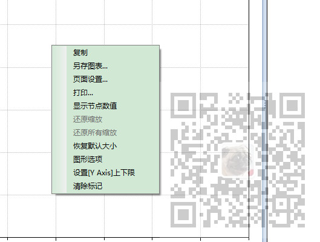
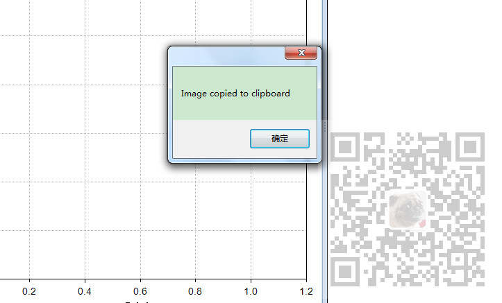

原文出处:本文由博客园博主霸道流氓提供。
原文连接:https://www.cnblogs.com/badaoliumangqizhi/p/11840627.html
原文连接:https://www.cnblogs.com/badaoliumangqizhi/p/11840627.html
场景
Winform中实现ZedGraph中曲线右键显示为中文：
https://blog.csdn.net/BADAO_LIUMANG_QIZHI/article/details/100115292
在上面对邮件菜单进行汉化后效果

但是此时的右键复制后提示依然为中文

怎样将复制成功的提示修改为自定义提示。
注：
博客主页：
https://blog.csdn.net/badao_liumang_qizhi
关注公众号
霸道的程序猿
获取编程相关电子书、教程推送与免费下载。
实现
首先关掉ZedGraph的复制成功后的提示
这里是在窗体加载完后中初始化ZedGraph时进行设置。
zgc.IsShowCopyMessage = false; //不显示复制成功的提示
其中：ZedGraphControl zgc
然后在上面进行汉化的switch-case中重写复制的item的点击事件
foreach (ToolStripMenuItem item in menuStrip.Items)
{
switch (item.Name)
{
case "copied_to_clip":
item.Text = @"复制到剪贴板";
break;
case "copy":
item.Text = @"复制";
item.Click += item_Click;
break;
case "page_setup":
item.Text = @"页面设置...";
break;
case "print":
item.Text = @"打印...";
break;
case "save_as":
item.Text = @"另存图表...";
break;
case "set_default":
item.Text = @"恢复默认大小";
break;
case "show_val":
item.Text = @"显示节点数值";
break;
case "title_def":
item.Text = @"标题";
break;
case "undo_all":
item.Text = @"还原所有缩放";
break;
case "unpan":
item.Text = @"还原上一步缩放";
break;
case "unzoom":
item.Text = @"还原缩放";
break;
case "x_title_def":
item.Text = @"X 轴";
break;
case "y_title_def":
item.Text = @"Y 轴";
break;
}
}
然后在点击事件中自定义一个弹窗内容。
private static void item_Click(object sender, EventArgs e)
{
DevExpress.XtraEditors.XtraMessageBox.Show("复制成功");
}
这里使用的DevExpress的弹窗，如果不使用可以直接
MessageBox.Show("复制成功");
效果